Industries
Industries We Serve
Bharat Metals supplies stainless steel materials for fabrication, engineering, commercial kitchen equipment, food processing, pharma equipment, automobile support, marine repair, construction, interiors, water treatment and other South India industries. Buyers usually approach with a product form, grade, size, finish, quantity and delivery location. Bharat Metals helps industry buyers review requirements for SS 202, SS 304, SS 316 and related grades across pipes, sheets, plates, coils, rods, bars, fasteners, fittings, wire mesh and perforated sheets.
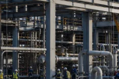
Industries using stainless steel across Tamil Nadu and South India
Chennai and nearby industrial belts create many different stainless steel enquiries. Ambattur, Guindy, Sriperumbudur, Oragadam, Hosur, Coimbatore, Trichy, Madurai, Pondicherry, Sricity and Tada may each discuss different product forms, grades and dispatch expectations. Fabrication shops may ask for pipes, sheets, angles and flats; machine shops may ask for rods, bars and plates; commercial kitchen fabricators may focus on sheets, tubes and polished finishes.
Different industries need different grades and documentation conversations. Food, pharma and dairy buyers often discuss SS 304, SS 316 and SS 316L with finish and hygiene notes. Marine and coastal buyers often compare SS 304 and SS 316. Automobile, pump, valve and engineering buyers may discuss rods, bars, fasteners and plates with certificate expectations.
Industry pages
Browse All Industry Pages
Every industry card opens a detailed page with products, grades, RFQ notes and FAQs.

Fabrication and Welding
Fabricators often enquire for pipes, sheets, plates, rods, flats, angles and channels for frames, supports, repair work and custom stainless steel fabrication. SS 202, SS 304 and SS 316 may be discussed based on application and exposure.
Typical enquiries: Pipes, Sheets, Rods, Angles
Common grades: SS 202, SS 304, SS 316

Railing Contractors
Railing buyers commonly discuss polished pipes, tubes, flats and sheets for residential, commercial and interior work. SS 202 and SS 304 are frequent enquiry grades, with finish and gauge details important for quotation.
Typical enquiries: Polished Pipes, Tubes, Flats, Sheets
Common grades: SS 202, SS 304, SS 316

Automobile and Auto Components
Auto-component and engineering buyers may ask for rods, bars, sheets, plates and fasteners for fixtures, shopfloor work, machining and maintenance. Chennai, Sriperumbudur, Oragadam, Ambattur and Hosur are important related markets.
Typical enquiries: Rods, Bars, Sheets, Fasteners
Common grades: SS 304, SS 316, SS 410

Hotel and Commercial Kitchen Equipment
Commercial kitchen fabricators usually discuss SS 304 sheets, tubes, pipes, plates and polished finish requirements for counters, tables, exhaust systems, sinks, food-prep areas and hotel equipment.
Typical enquiries: Sheets, Tubes, Pipes, Plates
Common grades: SS 304, SS 316

Food Processing
Food processing buyers often ask for SS 304 or SS 316 sheets, pipes, fittings, wire mesh and perforated sheets where cleanability, finish and certificate discussions matter.
Typical enquiries: Sheets, Pipes, Fittings, Wire Mesh
Common grades: SS 304, SS 316, SS 316L

Pharma and Healthcare Equipment
Pharma and healthcare equipment enquiries often involve SS 304, SS 316 or SS 316L sheets, tubes, pipes and fittings, with attention to finish, documentation and cleanable surfaces.
Typical enquiries: Sheets, Tubes, Pipes, Fittings
Common grades: SS 304, SS 316, SS 316L

Engineering and Machine Shops
Engineering buyers commonly discuss rods, bars, plates and flats for machining, repairs, brackets, components and workshop use. Size, length, tolerance and certificate expectations should be shared early.
Typical enquiries: Bars, Rods, Plates, Flats
Common grades: SS 304, SS 316, SS 410

Builders and Construction
Construction and project buyers may enquire for angles, channels, plates, sheets and fasteners for frames, supports, cladding, railing and site fabrication.
Typical enquiries: Angles, Channels, Sheets, Fasteners
Common grades: SS 202, SS 304, SS 316

Interior and Architectural Contractors
Interior buyers often discuss decorative stainless steel sheets, tubes, flats, polished pipes, mirror finish, hairline finish and brush finish requirements for visible applications.
Typical enquiries: Sheets, Tubes, Flats, Decorative Stainless Steel
Common grades: SS 304, SS 430

Marine and Ship Repair
Marine and coastal enquiries often involve SS 316 or SS 316L pipes, plates, fasteners, fittings and flanges where corrosion exposure and packing requirements need clear discussion.
Typical enquiries: Pipes, Plates, Fasteners, Fittings
Common grades: SS 316, SS 316L

Railways and Metro Projects
Railway and metro-related fabrication enquiries may include sheets, plates, fasteners, pipes, brackets and structural support items where grade, size, certificate and project specification need to be clear.
Typical enquiries: Sheets, Pipes, Fasteners, Plates
Common grades: SS 304, SS 316

Oil and Gas
Oil and gas maintenance and project buyers often discuss pipes, flanges, fittings, plates and fasteners with grade, schedule, class, certificate and inspection expectations.
Typical enquiries: Pipes, Flanges, Fittings, Plates
Common grades: SS 304, SS 316, SS 316L

Chemical and Petrochemical
Chemical and petrochemical buyers may review SS 304, SS 316 and SS 316L pipes, plates, flanges and fittings where corrosion exposure, certificate and application details matter.
Typical enquiries: Pipes, Fittings, Flanges, Plates
Common grades: SS 304, SS 316, SS 316L

Textile Machinery
Textile machinery and processing buyers often enquire for rods, bars, sheets, flats, pipes and perforated sheets for machine repair, dyeing support, guards and fabrication.
Typical enquiries: Rods, Bars, Sheets, Flats
Common grades: SS 304, SS 316

Water Treatment and Utilities
Water treatment and utility buyers commonly discuss SS 304 and SS 316 pipes, fittings, plates, wire mesh and fasteners for maintenance, filtration, piping and equipment support.
Typical enquiries: Pipes, Fittings, Wire Mesh, Plates
Common grades: SS 304, SS 316
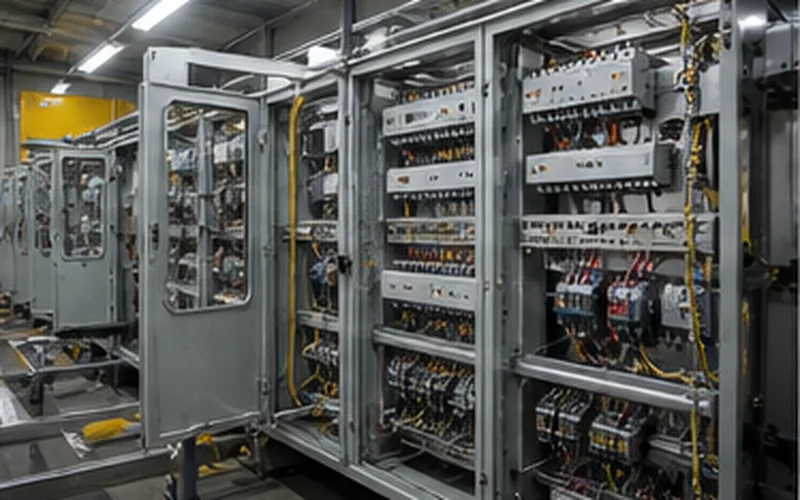
Electrical and Control Panel Fabrication
Electrical and panel fabricators may ask for sheets, flats, angles, fasteners and channels for enclosures, frames, supports and site fabrication requirements.
Typical enquiries: Sheets, Angles, Fasteners, Channels
Common grades: SS 304, SS 430
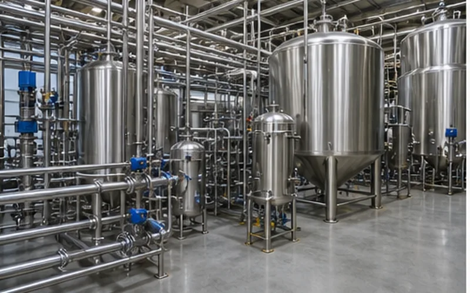
Dairy and Beverage Processing
Dairy and beverage equipment buyers often discuss SS 304 and SS 316 sheets, pipes, tubes and fittings with cleanable finish, certificate and hygiene expectations.
Typical enquiries: Pipes, Tubes, Sheets, Fittings
Common grades: SS 304, SS 316, SS 316L
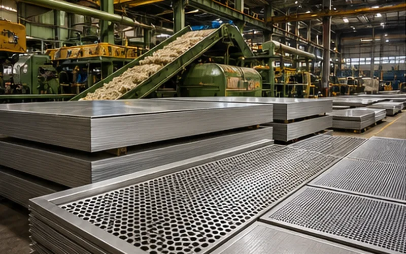
Sugar Mills and Agro Processing
Sugar mill and agro-processing buyers may enquire for plates, sheets, pipes, wire mesh, perforated sheets and fittings for maintenance, guards and process-area fabrication.
Typical enquiries: Plates, Sheets, Pipes, Wire Mesh
Common grades: SS 304, SS 316
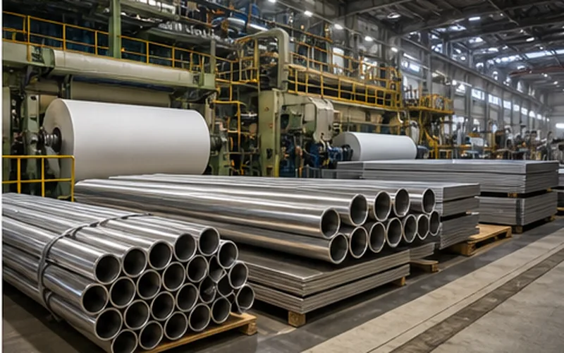
Paper Mills
Paper mill and process plant buyers may discuss sheets, plates, pipes, fittings and fasteners for maintenance, equipment repair and fabrication support.
Typical enquiries: Sheets, Plates, Pipes, Fittings
Common grades: SS 304, SS 316
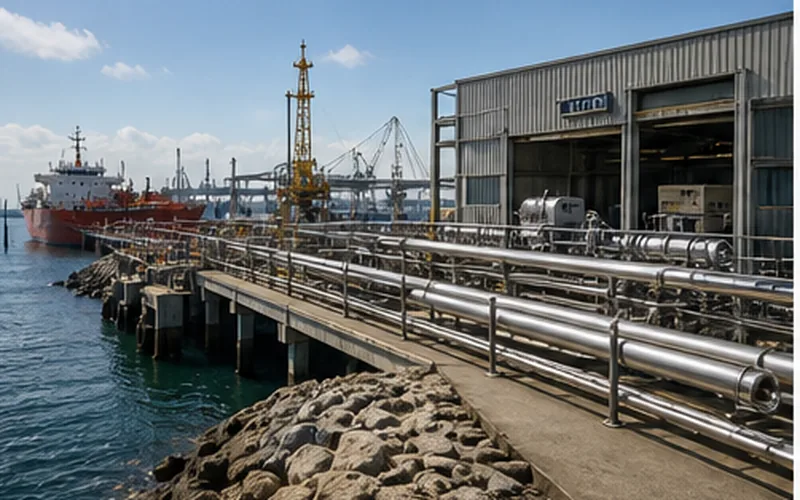
Ports, Shipping and Coastal Infrastructure
Port, shipping and coastal infrastructure buyers often compare SS 304 and SS 316 for pipes, plates, fasteners, flanges and fittings where coastal exposure and packing are important.
Typical enquiries: Pipes, Plates, Fasteners, Flanges
Common grades: SS 316, SS 316L
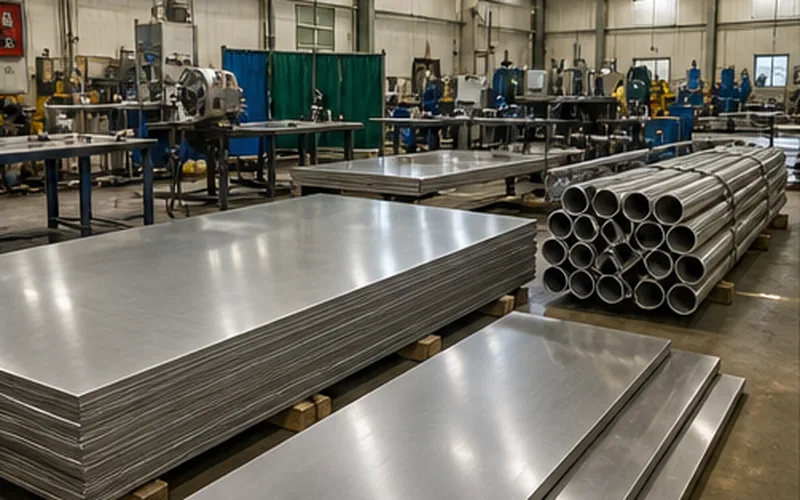
Educational and Institutional Fabrication
Institutional projects may require sheets, pipes, tubes, fasteners and decorative stainless steel for kitchens, railings, furniture, lab areas and maintenance work.
Typical enquiries: Sheets, Pipes, Tubes, Fasteners
Common grades: SS 202, SS 304
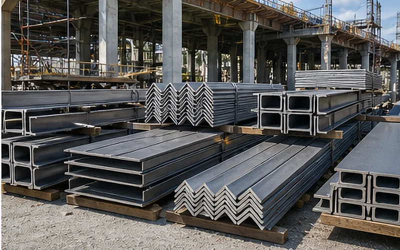
Public Works and Infrastructure Contractors
Infrastructure contractors may enquire for angles, channels, plates, fasteners, pipes and sheets for supports, site fabrication, public utility work and maintenance.
Typical enquiries: Angles, Channels, Plates, Fasteners
Common grades: SS 304, SS 316
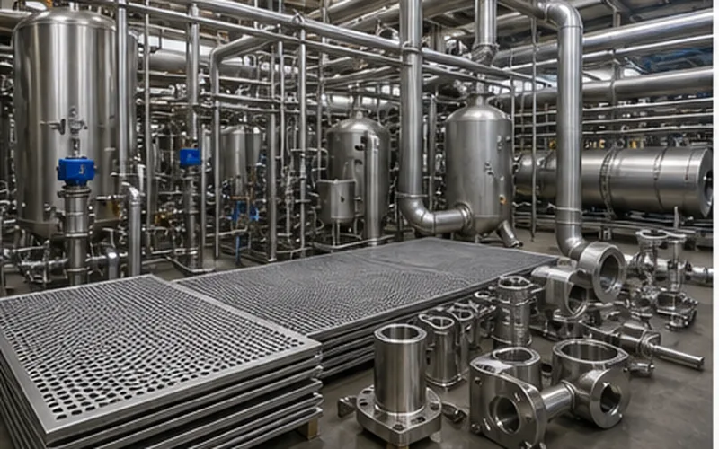
Textile Dyeing and Processing Units
Dyeing and processing units may discuss SS 304 and SS 316 pipes, sheets, fittings, perforated sheets and wire mesh where water, chemical and cleaning exposure matters.
Typical enquiries: Pipes, Sheets, Perforated Sheets, Fittings
Common grades: SS 304, SS 316
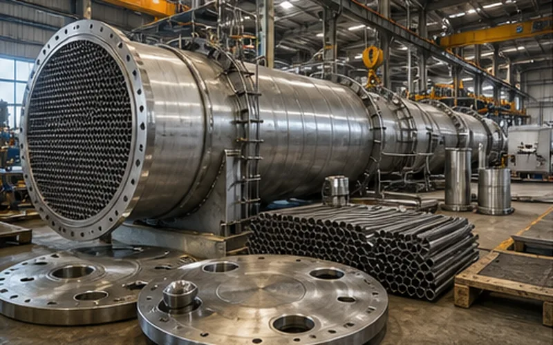
Boiler and Heat Exchanger Fabricators
Boiler and heat exchanger fabricators may discuss tubes, plates, pipes, flanges and fittings with grade, temperature, certificate and specification expectations.
Typical enquiries: Tubes, Plates, Pipes, Flanges
Common grades: SS 304, SS 316, SS 310
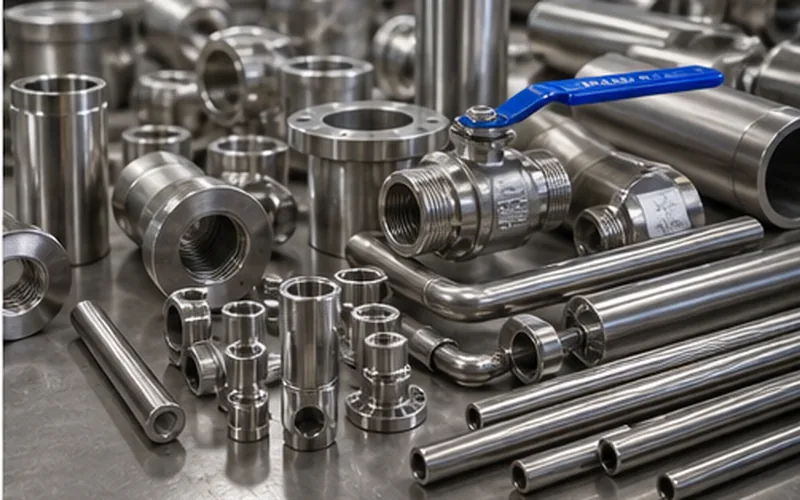
Pump, Valve and Equipment Manufacturers
Pump, valve and equipment buyers often ask for rods, bars, plates, flanges and fittings for machining, components, maintenance and engineering fabrication.
Typical enquiries: Bars, Rods, Flanges, Fittings
Common grades: SS 304, SS 316, SS 410
Common product demand by industry
Use this table to frame an industry-led RFQ before calling or sending a WhatsApp enquiry.
| Industry group | Common products | Common grades | Common RFQ details |
|---|---|---|---|
| Commercial kitchens | Sheets, tubes, pipes, plates | SS 304, SS 316 | Finish, thickness, size, polishing, hygiene expectation |
| Automobile and engineering | Rods, bars, sheets, fasteners, plates | SS 304, SS 316, SS 410 | Size, length, quantity, tolerance, certificate |
| Food, pharma and dairy | Pipes, sheets, fittings, wire mesh | SS 304, SS 316, SS 316L | Finish, certificate, hygiene requirement, packing |
| Marine and coastal repair | Pipes, plates, fasteners, flanges | SS 316, SS 316L, SS 304 | Corrosion exposure, packing, certificate, location |
| Construction and interiors | Angles, channels, sheets, tubes, fasteners | SS 202, SS 304, SS 316, SS 430 | Finish, size, site location, delivery timing |
Popular enquiry searches
Popular industry supply searches
Use these chips to describe the industry and product context in your RFQ.
- stainless steel suppliers for fabrication industries
- stainless steel suppliers for automobile industries Chennai
- SS 304 sheets for commercial kitchen equipment
- SS 316 pipes for food processing
- stainless steel suppliers for pharma equipment
- stainless steel rods for engineering machine shops
- stainless steel fasteners for industrial buyers
- stainless steel suppliers for marine repair
- stainless steel suppliers for water treatment
- stainless steel suppliers for textile machinery
Request a quote
Send your stainless steel requirement to Bharat Metals.
Call, WhatsApp or email the product form, grade/specification, size, quantity, finish and delivery location.
Buyer answers
Frequently asked questions
Answers to common questions about matching stainless steel grades, product forms, finishes and documents to industry applications.
Which industries does Bharat Metals support?
Bharat Metals supports enquiries from fabrication, railing, automobile, commercial kitchen, food processing, pharma, engineering, construction, marine, water treatment, textile and other industrial buyers.
Do different industries need different stainless steel forms?
Yes. For example, commercial kitchens often discuss sheets and tubes, machine shops discuss rods and bars, and process industries discuss pipes, fittings and plates.
Which grades are common across industries?
SS 202, SS 304 and SS 316 are common, with SS 304L, SS 310, SS 316L, SS 410, SS 420 and SS 430 reviewed by application.
Can industry buyers ask for MTC or mill certificate?
Yes. Documentation requirements should be mentioned in the first RFQ so they can be reviewed with the material.
Are the industry cards linked to detailed pages?
Yes. Each industry card links to a detailed page with product forms, grades, RFQ notes and FAQs.
Can Bharat Metals support industries outside Chennai?
Tamil Nadu and nearby South India industry enquiries can be reviewed from Chennai based on availability and logistics.
What should an industrial buyer include in an RFQ?
Send product form, grade, size, quantity, finish, drawing or sample reference, certificate need and delivery location.
Does Bharat Metals replace engineering material selection advice?
No. Grade suitability should be checked by the buyer, project engineer or specification authority.
Can one RFQ cover multiple industry product forms?
Yes. Buyers can send one consolidated RFQ for sheets, pipes, rods, fittings, fasteners or other products if each line item is clear.